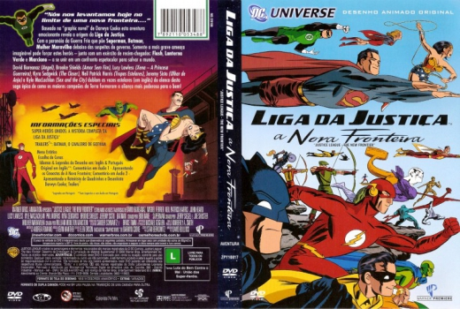

Outro Título:Justice League: The New Frontier
País:United States, 75 minutos
Idiomas falados:Inglês, Português
Gênero(s):Ação, Aventura, Animação, Sci-Fi
Diretor(s):Dave Bullock
Escritor(es):Stan Berkowitz
Codec:MPEG-2 (DVD)
Número: 5789


Certificado:
Sinopse:
A raça humana está ameaçada por uma criatura poderosa, e somente o poder combinado do Superman, Batman, Mulher-Maravilha, Lanterna Verde, Caçador de Marte e Flash pode detê-la. Mas será que eles conseguirão superar suas diferenças para frustrar esse inimigo usando a força combinada de sua recém-formada Liga da Justiça?
Elenco:

Tipo de mídia: DVD5,
Legendas: Inglês, Português, Sem Legendas
Alugado: Não
Tela: Anamorphic Widescreen